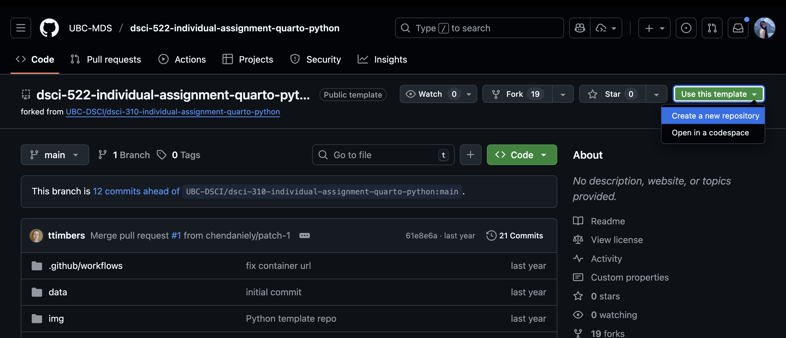
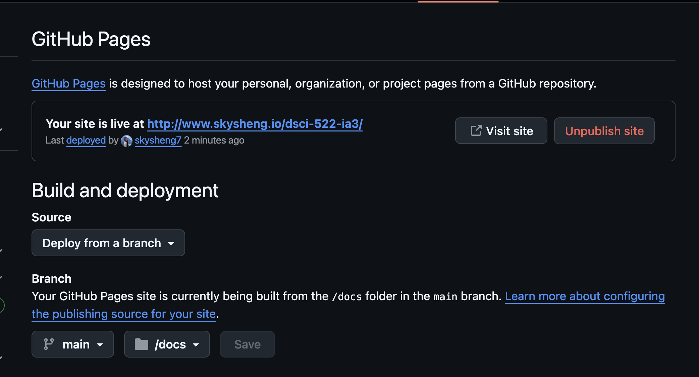

Quarto Cheatsheet
Quick Reference Guide for Quarto
1 Quarto Basics
1.1 Converting Jupyter Notebooks to Quarto
- Install quarto in your conda environment if you have not yet done so.
conda install quarto- Note: Please remember to redo conda lock of your enviornment, rebuild docker image after instaling quarto.
- If you are running things locally, you may need to manually convert your conda enviornment to jupyter kernel:
python -m ipykernel install --user --name <conda_env_name> --display-name "Python (<conda_env_name>)"- Convert your Jupyter Notebook to Quarto.
quarto convert notebook.ipynb2 Code we run in class: Individual Assignment 3
2.1 Create a new repository
- Use this github repository as a template, and create a new repository under your own GitHub account.
Click on “Use this template” button, and then click “create a new repository” button to create a public repository using default settings under your own GitHub account.

- Clone the repository and
cdinto the repository.
git clone <repository_url>
cd <repository_name>- Launch the Docker container using the following command:
docker compose upCopy and open the URL that starts with
http://127.0.0.1:8888/lab?token=in your browser, to launch jupyter lab docker container.Run the python script in the terminal to generate the plots and tables in the results folder.
python scripts/generate_figures.py --input_dir="data/00030067-eng.csv" \
--out_dir="results"You will see the results folder now has new plots and csv files saved.
2.2 Update .qmd file
2.2.1 Header formatting & table of contents
TODO: Add header formatting to sections (e.g., “Aim”, “Data”, “Methods”, “Results”, “References”) and Quarto configuration so that a table of contents that is automatically generated from the document headers will be created when the document is rendered
We will update the yml header to add table of contents. We will add table of content (toc) with depth 3 for both html and pdf formats. Your yml header at the begining of the file (i.e., qmd_example.qmd) should be updated to look like this:
title: "DSCI 310: Historical Horse Population in Canada"
author: "Tiffany Timbers & Jordan Bourak"
format: html
editor: source
format:
html:
toc: true
toc-depth: 3
pdf:
toc: true
toc-depth: 3You will format header sections using #, ##, ###, etc. For example, I’ve added the following header sections to the qmd_example.qmd file:
# Aim
...
# Data
...
# Methods
...
# Results
...
# References2.2.2 References
TODO: Add correctly formatted inline BibTeX references so that a nicely formatted reference list will be present at the end of the document.
You already have a references.bib file in the repository under the reports folder. We will point bibliography to look for references in this file in the yml header as follows:
title: "DSCI 310: Historical Horse Population in Canada"
author: "Tiffany Timbers & Jordan Bourak"
format: html
editor: source
format:
html:
toc: true
toc-depth: 3
pdf:
toc: true
toc-depth: 3
bibliography: references.bib- Quarto’s yaml uses 2 whitespaces to indent the yaml fields (not 4 whitespaces!! not tab!!).
- Please use
:to separate the field name and the field value.
Let’s render what we have so far to see the result. In your terminal, please run the following commands:
# go to the reports directory if you are in the root directory
cd reports
# render the html file
quarto render qmd_example.qmdYou will notice that no references are listed in the rendered pdf or html file. This is because we have not added in-text citations to the .qmd file. You can list as many BibTex references as you want in your references.bib file. However, only the references that are cited in the .qmd file will be listed in the rendered pdf or html file under “References” section.
Let’s add in-text citations to the .qmd file. We will use the [@reference_key] syntax (or [@reference_key1; @reference_key2] when you have more than 1 reference) to cite references. Please note the reference_key is the first phrase after { in the BibTex entry. For example, for this entry in the references.bib file:
@Manual{click,
title = {Click Python Package},
author = {Pallets Team},
year = {2020},
url = {https://click.palletsprojects.com/},
}The reference_key is click. We will use [@click] to cite this reference in the .qmd file.
For example, I’ve added the following in-text citations to the .qmd file. Please complete all other in-text citations yourself:
Horse population data were sourced from the
[Government of Canada's Open Data website](http://open.canada.ca/en/open-data) [@horses1; @horses2]...2.2.3 Figure formatting
TODO: Edit the figure formatting so that Quarto:
- automatically numbers them
- has a label for easy cross referencing
- controls the figure sizes so the figures are not too big (in particular the second figure in the report should be only 60-70% of the default width)
We use the syntax {#fig-label width=950%} to format the figure. For example, I’ve added the following figure to the .qmd file, and I use @fig-label to refer to it in the text. This will be rendered as Figure 1 in the rendered pdf or html file. You will do so for both Figure 1 + 2.
# Results
{#fig-horse-pop width=60%}
We can see from @fig-horse-pop that Ontario, Saskatchewan and Alberta fig-label
- You have to name your figure with starting with a
figprefix (sorry for my mistakes in class!). - You have to use
-instead of_in the figure label. - Example:
fig-horse-popinstead ofhorse_pop.
2.2.4 Table formatting
TODO: add a table description argument so that they are automatically numbered by Quarto and use cross referencing to link to the table if/when it is discussed in the text
We use the syntax below inside of python code block to format the table:
#| label: tbl-label
#| tbl-cap: Table descriptionFor example, I’ve added the following table to the .qmd file. @tbl-horse-sd will be rendered as Table 1 in the rendered pdf or html file.
We present the standard deviations in @tbl-horse-sd.
```\{python}
#| label: tbl-horse-sd
#| tbl-cap: Standard deviation of historical (1906-1972) horse populations for each Canadian province.
horses_sd_table = pd.read_csv("../results/horses_sd.csv")
largest_sd = horses_sd_table['Province'].values[0]
Markdown(horses_sd_table.to_markdown(index = False))
```tbl-label
- You have to name your table with starting with a
tblprefix (sorry for my mistakes in class!). - You have to use
-instead of_in the table label. - Example:
tbl-horse-sdinstead ofhorse_sd.
2.2.5 Cross-referencing
TODO: Edit the narrative so it uses cross-referencing to refer to the figures and tables instead of having their reference hardcode the figure and table numbers.
In the steps above, we have already used cross-referencing to refer to the figures and tables (e.g., @fig-horse-pop and @tbl-horse-sd).
2.2.6 Inline Quarto code
TODO: replace the ??? in the Quarto report narrative text with inline Quarto code, so that the text will be automatically updated with the correct value
We use the syntax below to do inline Quarto code. It will execute the python / R code inside of the code block and resulting value will be displayed in the text.
`{python} <python_code>`For example, I’ve added the following inline Quarto code (i.e., {python} largest_sd) to the .qmd file:
```\{python}
#| label: tbl-horse-sd
#| tbl-cap: Standard deviation of historical (1906-1972) horse populations for each Canadian province.
horses_sd_table = pd.read_csv("../results/horses_sd.csv")
largest_sd = horses_sd_table['Province'].values[0]
Markdown(horses_sd_table.to_markdown(index = False))
```
...
In @fig-horse-largest we zoom in and look at the province of `{python} largest_sd`, which had the largest spread of values in terms of standard deviation.2.2.7 No code chunk visible
TODO: change the code chunk options so that no code is viewable in the rendered report, just the code outputs where needed (e.g., figures and tables)
We will set echo: false in the yml header to hide the code chunk in the rendered report.
title: "DSCI 310: Historical Horse Population in Canada"
author: "Tiffany Timbers & Jordan Bourak"
format: html
editor: source
format:
html:
toc: true
toc-depth: 3
pdf:
toc: true
toc-depth: 3
bibliography: references.bib
execute:
echo: false2.2.8 GitHub Pages
TODO: (optional/bonus) Turn on GitHub pages so that it serves up the docs directory so that the report is viewable on the web.
At the root directoy of your repository, please create a new file called _quarto.yml and add the following content:
project:
type: website
output-dir: docsThis file will tell Quarto to output the rendered report to the docs folder, as a website.
Also create an empty file called .nojekyll at the root directory of your repository:
touch .nojekyllQuarto copies it into the docs folder every time you render, and it tells GitHub Pages to serve your files exactly as they are (see Turning off Jekyll with .nojekyll in the DSCI 521 notes).
Then, at the root directoy of your repository, please run the following command to render the report in the terminal:
quarto renderYou will see that the rendered report is now all in the docs folder. There is a index.html file in the docs folder, you can open it in your browser to view the report.
Confirm that .nojekyll is in docs, the folder GitHub Pages publishes from. ls hides files whose names start with a dot, so add -a:
ls -a docsYou should see .nojekyll in the list.
It is normal to not see figures being rendered inside of Jupyter lab. You will need to go to local folder, and double click on the index.html file to view the report in a browser.
2.3 Clean up
After you are sure that you have completed everything. Close the jupyter lab docker container. In your terminal, press
Ctrol + Cto stop the container. Then rundocker compose rmto remove the docker container.Push your changes to github as usual.
2.4 Hosting on GitHub Pages
After you pushed all changes to your github pages, please follow these steps:
- Go to your github repository
- Click on “Settings” gear icon
- Click on “Pages” on the left panel
- Under “Source”, select “Deploy from a branch”
- Under “Branch”, select “main”
- Then select “docs” folder from the dropdown menu
- Click on “Save” button

- Wait a few minutes, and refresh the page. You will see that github now says something like the message shown below:

- On GitHub.com, open the
docsfolder of your repository and check that.nojekyllis there. GitHub Pages reads that copy, not the one on your computer. If your published site looks different from the report you rendered locally, a missingdocs/.nojekyllis the first thing to check.
3 Congratulations!
You have successfully fixed the Quarto report and hosted it on GitHub Pages!
If you want to see all the changes I made in the qmd_example.qmd file, please click on the “Commits” tab in the repository and you will see the changes I made in the commit history.